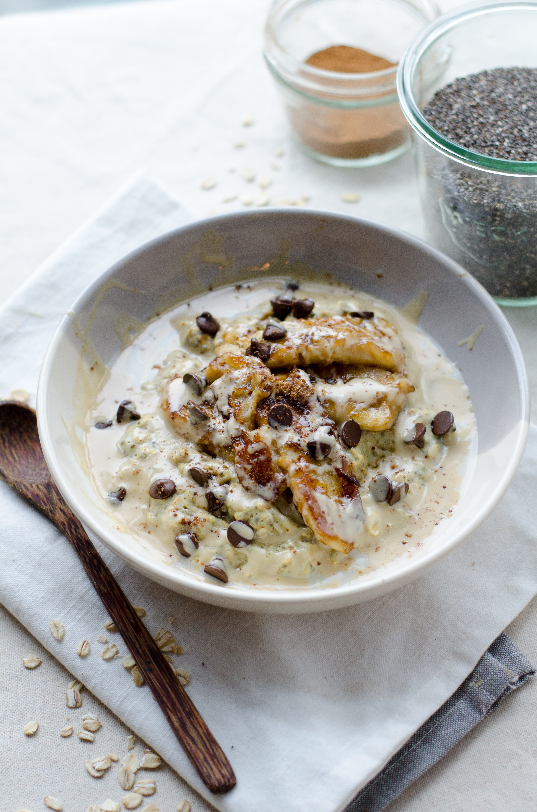

Porridge

Description
Porridge is a thick, warm type of food similar to oatmeal. It's often a breakfast food. When you boil oats in milk or water, the end result of porridge. Porridge is served in a bowl and eaten with a spoon.
It's usually served for breakfast and is famous for appearing in the fairy tale of Goldilocks.
Ingriedients
- 100g porridge oats
- 1/2 tsp cinnamon , plus extra to serve
- 4 tsp demerara sugar
- 450ml skimmed milk
- 3 bananas , sliced
- 400g punnet strawberries , hulled and halved
- 150g pot fat-free natural yogurt
Steps
- Put mil with oats in a pot
- Boil milk
- Add foods and yogurt
- Dress with cinnamon